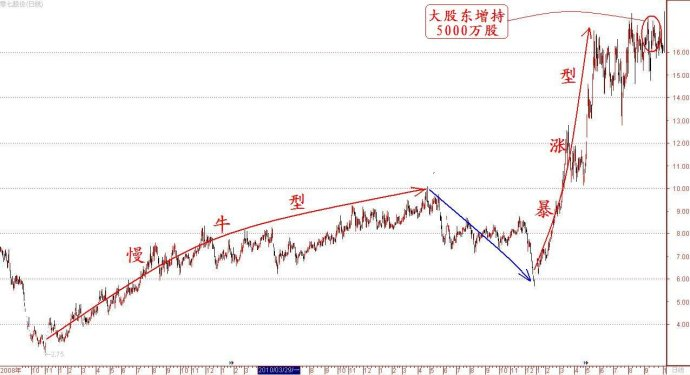

第274篇•教你炒股系列68:主升浪的形态（19）
谷为陵
（5）强庄股
说到庄股，我应该是最有发言权的了。因为我经历过那个庄家时代，我对于庄家、庄股、坐庄都是深有研究的，我在前面的博文中也经常谈到这些。我说过，现在市场上还有庄家，还有庄股，还有人在坐庄，这些东西或许是永远也不可能消除干净的。随着时间的推移，时代的进步，市场的变化，庄家、庄股、坐庄模式也在发生深刻的变化。但有道是，万变不离其宗，本质的东西是一样的。
大致说来，现在市场上有四类庄股：一是游资型非控盘型庄股、二是二级市场控盘型庄股、三是二级市场与产业资本联合控盘型庄股、四是产业资本型庄股。
这里要搞清楚一个问题，并非所有黑马股和大牛股都是庄股，这个问题有时候还是很不容易弄清楚的。任何庄股必有两个本质特征：一是庄家必须拿到超出法定限度的筹码，二是庄家存在股价操纵行为。没有这两个特征的，就不是庄股。很多黑马股或者大牛股，是你买我也买，每一家的持仓量都不超过流通盘的5%，且不存在对敲行为，那么，即使这些股票涨到天上去，也不是庄股。反之，即使一只股票还没有怎么上涨，但查出有人通过合谋已经持仓超过流通盘30%，且有对敲行为，那也是庄股，也要被证监会查处。
证监会与庄家的关系，就是猫和老鼠的关系。猫虽然变得越来越厉害，但老鼠也学乖了，行动越来越隐蔽了——分仓更细，对敲停止。既然不对敲了，那庄家还怎么坐庄呢？我们以前所说的对敲，是指今天用A帐户买进，B帐户卖出，明天又反过来，用B帐户买进，A帐户卖出，不同的帐户相互倒腾。现在这样做也不灵了，证监会只要将所有这些帐户的历史交易记录全部调出来，就很容易看出这些帐户都是在不停地对一只股票在相互进行买卖，这不是对敲是什么？那现在的庄家怎么做呢？只有两个办法：
其一，永远单向自我对倒操作。每一个帐户，只能操作两次，一次买进，一次卖出，操作完毕后，就将该帐户封住不动。比如，先用A帐户买进，要对敲的时候，再用A帐户卖出，用B帐户买进，此时，A帐户就没有股票了，这个帐户就暂时不用了。其后，要卖出股票时，是用B帐户卖出，C帐户买进，一直持续下去。如此形成一个帐户操作的串联链条：A→B→C→……。有人会问，这样做那需要多少帐户呀？你要知道，再多的帐户庄家也能搞到，另外，这样做并不需要太多帐户，因为只要每一个帐户内的股票数量和资金量足够多就行。比如说，某一个庄家对一只股票控盘了50%，若按照单一帐户持股量不超过流通股的5%计算，该庄家理论上只需要11个帐户就可以了，每个帐户平均持股量为流通股的4.55%，这并不违规。同时，该庄家还准备了11个资金帐户，正好可以接走这些股票帐户内股票。有了这22个帐户，该庄家就可以完成一次全仓对倒。如果坐庄的过程中需要进行10次全仓对倒，那么，就准备220个帐户好了。当然，在实际操作中，庄家是不可能在一个帐户中吃进那么多股票的，持仓帐户肯定应该更多一些。但另一方面，由于庄家在对倒时，并不需要将所有底仓都拿出来对倒一遍，庄家的大部分底仓在出货前是锁定不动的，因此，需要对倒的股票量并不高。但不管怎么说，一个控盘式庄家至少需要准备1000个帐户。
其二，与市场对倒操作。以上的对倒方法是笨庄家的玩法，更高明的庄家一般不采用这个方法，他们采用的是与市场对倒的方法。庄家用在A帐户建完底仓后，这些底仓基本上就不再动了，偶尔出来动换一下，也是为了显示帐户的活跃度。其后，庄家在拉高股价的过程中，就用另外的B帐户先吃进散户的筹码，第二天再将B帐户股票全部卖给散户，同时用C帐户再将散户的筹码吃进，这样就形成了帐户的并联操作关系：
底仓：散户筹码→A
对倒1：散户筹码→B→散户
对倒2：散户筹码→C→散户
……
此后，B、C帐户还可以反复使用。因为仅从B、C帐户来看，这些单个帐户的持仓量均低于流通股的5%，只要那个底仓的A帐户不与B、C帐户发生关系，即使B、C帐户反复买卖某只股票，且买入和卖出的对手均为不特定的散户，那就没有什么毛病，因为证监会并没有规定一个帐户不能反复买卖某一只股票。待到股价拉到出货价位，这时候底仓的A帐户才如冬眠后苏醒过来，开始卖出股票：
出货： A→散户
好了，关于庄家的坐庄手法问题，并非本文的重点，我还是接着谈强庄股的前慢后快型两波主升浪的话题。对于强庄股来说，这样的主升浪形态是很容易理解的：第一波慢牛型主升浪是建仓，而第二波暴涨型主升浪是拉高出货。这样的案例很多，我今天要举一个很反常的案例，与其它庄股拉高出货的玩法不一样，这只股票就是零七股份（000007）。
零七股份是一只很奇怪的股票。它的前身是深圳最早上市的“老八股”之一深达声，前两年经过广州博融投资公司借壳上市后，新东家嫌深达声这个名字不好，但自己有想不出别的什么好名字，但国不可一日无君，公司不可须臾无名呀，谁知在情急之下，新东家竟然直接用了该股的股票代码作为了名字，开了股市起名的先河。你还别说，这个名字还是挺别出心裁的，要说这个新东家的智商和情商都够可以的。
该股的名字奇怪，该股的走势也奇怪。今年上半年，该股突然飙升，股价从最低的5.7元涨到了17.8元，涨幅达212%，成为了股市下跌时的一道风景线。但该股在其上涨过程中，没有任何利好题材配合。这倒符合庄股的拉高出货规律，庄股一般是在股价拉到高位后再放出利好题材，以让散户在见到利好而冲进来时，庄家趁机出逃。那么，该股在股价拉到高位时，究竟有何出货题材呢？
说到该股的出货题材，那就更加令人奇怪了。你猜利好题材是什么？我相信事先没有看到过公告的人，是绝对想不出来的。前不久，该股终于公告了一个利好题材，那就是向现在的法人练卫飞定向增发5000万股,发行价格为14.55元/股,募集资金总额7.3亿元。大股东在股价最高位进行增持，这在A股历史上恐怕是绝无仅有的。
下面是该股自2008年底至今的日K线走势图（不复权）：

零七股份疑云密布，大股东意欲何为？现在让我们理理思路，我先提出几个问题：
问题一，假若大股东是真心想增持股票，他为什么不在股价5.7元多的底部增持，同样的7.3亿元不是可以换取1.5亿股吗（大股东增发价可以打8折），要比现在的5000万股多出1亿股，何乐而不为呢？高位给自己增发，这不符合通常的逻辑。
问题二，大股东在高位增持股票是因为股价打不下来吗？零七股份本身业绩就差，不像贵州茅台，股价还真的跌不下来，要将零七股份股价打下来是很容易的，大股东只要将业绩做成巨亏，做成ST，谁还敢炒？谁还敢在股价高位举杠铃？庄家与大股东作对，绝对是找死，大股东整死庄家的路子是无限的，从来没有过这样傻的庄家。所以，说大股东是因股价打不下来而不得不高位增持，这更不符合逻辑。
现在两个问题的焦点就是，大股东为什么要在股价的最高点动用7.3亿元巨资增持？
只有一个合理的解释，那就是大股东已经在股价低位将流通筹码吃饱，在将股价炒到高位后，底仓已经获利丰厚，只不过这些获利盘暂时无法出货，处于浮盈状态。也许是大股东憋着一个大局，大股东并不急于在现在价位出货，他还要继续增持。但这个增持实在是非常高妙的，表面看是大股东拿出了7.3亿元的真金白银，以此表明大股东是多么看好自己的公司的前景，给公司树立了一个极好的形象，但实际上，大股东根本没有掏一分钱，因为他在底仓赚到的钱远远多于那7.3亿元。我简单算一笔账就可明白。零七股份的流通股为1.8亿股，假设大股东底仓拿了1亿股，平均持仓价格是6元（由于该股在2008年11月至2009年4月间，在股价2.7元至6元换手率达到了550%，庄家在6元附近低价建仓50%是有可能的），现在零七股份的股价是16元，大股东的这1亿股浮盈就达到了10亿元，高于增持的7.3亿元。这就是一种绝妙的“零成本高位增持”行为！
既然大股东在股价高位巨量增持了，至少说明大股东是不会在现在的价位出货的，他还要等待更高的价格。这就是我说的大股东肯定憋着一个更大的局，大股东立志要将股价再合情、合理、合法地搞上一个大台阶。要达成这个目标，大股东就必须将零七股打造成为一只绩优股，每股收益搞到1元以上。现在已经有评论这样说：“该股的矿产品销售有望逐步成为利润主要来源,公司在做好包销钛矿进口的同时，开拓了其他矿产品内外贸业务,进一步增加公司的利润增长点。预测公司2012-2014年EPS分别为0.43元, 0.70元和1.73元”。
也许大股东确实对于自己的公司信心满满，所以才会将零七股份的股份榨干吃尽，肥水不流外人田。客观地说，大股东是在进行一场赌博，若赌对了，仅大股东持有的1.5亿股底仓和增发股份就将获利数十亿元；若赌错了，则会鸡飞蛋打，不仅底仓收益灰飞湮灭，还会将自己增持的7.3亿元也闷进去。
但不管怎么说，零七股份的这种产业资本的新玩法还是让我们大开眼界，我们就看看大股东以后怎么玩，该股股价怎么表现吧。
（未完待续）